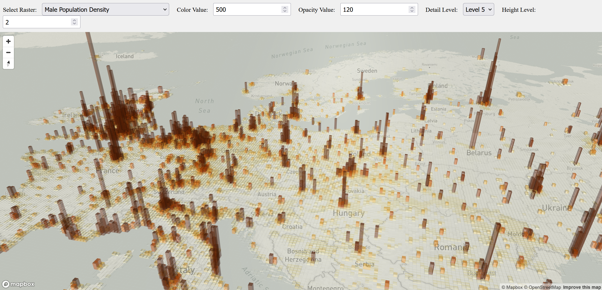
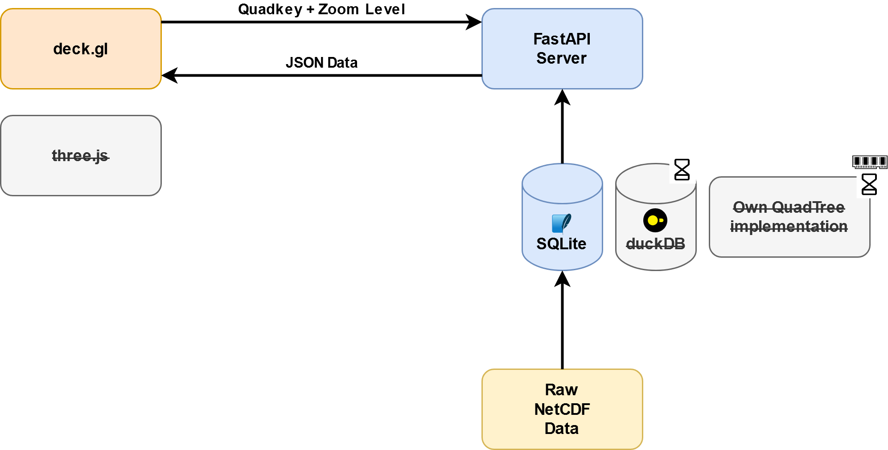

Interactive Population Density Visualization
Overview
This project creates an interactive 2.5D visualization of global population densities using deck.gl. Population density is represented through both height and color saturation, making demographic patterns easily recognizable. The web application allows users to explore population data from global to regional scales.

Architecture

Prerequisites
- Python 3.x
- Node.js
- Mapbox access token
- Download the demographic dataset from SEDAC CIESIN
- Select: DIRECT DOWNLOAD
- Files: All
- Temporal: Combined Five Year Age Groups
- Format: NetCDF
- Resolution: 2.5 Minute
Setup Instructions
Data Loading (once)
-
Data preparation:
-
Unzip the downloaded dataset
- Move
gpw_v4_basic_demographic_characteristics_rev11_mt_2010_dens_2pt5_min.ncto the/datafolder -
Run the data loading notebook:
-
Navigate into /src/backend/notebooks
cd /src/backend/notebooks
python3 -m venv venv
source venv/bin/activate
- Install dependencies:
pip install -r requirements.txt
- Run Notekook to create the database quadkeyDB.sqlite in /data
jupyter notebook loadDataSQLite.ipynb
Backend Setup
- Navigate into src/backend/fastAPI
cd src/backend/fastAPI
- Create and activate Python virtual environment:
python3 -m venv venv
source venv/bin/activate
- Install dependencies:
pip install -r requirements.txt
- Start the backend server:
fastapi dev mainSqlite.py
Frontend Setup
- Navigate to the frontend folder (/src/frontend/deckgl) and install dependencies:
npm install
- Configure Mapbox token (choose one method):
# Option 1: Environment variable
export MapboxAccessToken=<your_mapbox_token>
# Option 2: Direct configuration in app.tsx
# Set MAPBOX_TOKEN in the source code
- Start the development server:
npm start